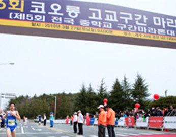
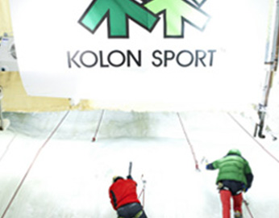
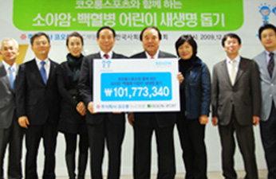

환경보전
- 환경경영
- 환경정화활동
- Responsive Care
환경경영
환경 오염과 자원 고갈로 인한 전 지구적 환경 변화로 인해 지속 가능한 성장을 추구하는 경영 패러다임의 전환이 이루어지고 있습니다. 지속 가능한 성장만이 인류의 영속성은 물론 궁극적으로 삶의 질은 높여준다는 사실을 깨닫게 된 것입니다.
코오롱인더스트리㈜는 환경에 미치는 영향을 최소화하기 위해 원료 사용에서부터 폐기물 발생에 이르기까지의 전 공정을 체계적으로 관리하고 있습니다. 모든 공장의 폐기물 관리 수준은 현행 법규에서 요구하는 수준 보다 더욱 엄격하게 관리되고 있어 폐기물로 인한 피해를 원천적으로 차단하고 있습니다. 또한 제품 설계 단계인 R&D 부터 환경 친화적인 개념으로 접근하고, 각종 에너지와 자원 사용량을 절감하기 위한 기술적, 경제적 투자 또한 아끼지 않고 있습니다.
환경정화활동
환경을 생각하고 사회에 기여하는 기업으로 거듭나고자 코오롱인더스트리㈜는 ‘자연과 함께 꿈과 사랑을' 이라는 모토로 본사 및 각 사업장 가까이에 위치한 공원 및 명소들에 대한 정화활동을 연 2회에 걸쳐 전사적으로 실시하고 있으며 자연보호에 대한 홍보활동도 함께 실시함으로써 지역민의 환경의식 고취에도 힘써 왔습니다. 또한 코오롱인더스트리㈜ 는 도시생태 공원 조성, 서울의 녹지숲 복원을 위해 뚝섬 일대 조성된 서울숲 35만평 중 일부를 ‘코오롱인더스트리㈜의 숲’으로 2004년부터 조성하여 녹색서울을 만들어 가는데 동참하고 있으며, 재단의 환경보전 행사와 기후변화센터 후원 등의 다양한 환경보전활동에 협력하고 있습니다.
이외에 각 사업장에서 공장에 인접해 있는 자매결연 마을 청소 및 꽃길 조성, 그리고 매주 사업장 주변을 청소, 지역 자연학습원 지원 등을 통해 깨끗한 기업이미지를 고취시키는 동시에 지역과 함께하는 기업으로서의 위상을 높이고 있습니다.
Responsible Care
1999년 국제적인 환경보전 연대인 Responsible Care 협의회에 가입하여 적극적인 환경경영을 실천해 가고 있습니다. Responsible Care는 화학업계가 화학제품을 개발단계에서부터 제조·판매·유통·사용을 거쳐 폐기에 이르기까지 전 Life Cycle에 걸쳐 환경과 인간의 건강을 보호하도록 배려하고 경영방침에 이를 공약하여 환경·안전·보건 대책을 실행, 지속적으로 개선을 도모하기 위하여 화학기업들이 선도적으로 추진하고 있는 국제적인 운동입니다.
최고 경영자 역할의 중요성
RC추진에서 가장 중요한 첫 번째 단계는 CEO를 위시한 최고 경영자들의 RC추진에 관한 결의를 회사 조직 내 모든 근로자들에게 주지시킴으로써 RC의 철학과 의미를 모든 회사 구성원들이 공유하는 것입니다. 최고 경영자들의 관심도와 지원이 RC의 성패와 직결되어 있다는 것은 RC를 먼저 시행한 국가 및 기업의 교훈이기도 합니다.
RC 추진조직 구성
Responsible Care의 실천은 회사 전체가 참여해야 하는 광범위한 내용이므로, 코오롱인더스트리㈜에서는 최고책임자를 필두로 하여 전 사원이 동참할 수 있는 조직을 구성하고 있습니다. 아울러 사내 RC 추진및 한국RC협의회 사무국, 다른 회원사들과의 정보교류를 위하여 실무자급의 담당자(코디네이터)를 지정하고 있습니다.
RC 실행계획 수립
추진 조직이 성립된 후에는 사업장의 현재 상황을 점검하고, 실행계획을 수립하여 한해 동안 실천한 뒤 그 결과를 평가하여 다음 해 계획, 혹은 중장기 계획에 반영함으로써 점진적인 환경ㆍ안전ㆍ보건 개선을 이루고 있습니다.
자체평가
Responsible Care는 기업의 자발적인 개선활동이므로 자체평가를 기본적인 평가방법으로 하고 있습니다. 매년 코오롱인더스트리㈜의 자체평가 결과는 한국RC협의회에 제출하고 있습니다.
RC 보고서
코오롱인더스트리㈜는 Responsible Care추진성과를 취합하여 한국RC협의회에 보고하고 있습니다. 그리고 한국RC 협의회에서는 매년 연례보고서 작성을 하고, 우수사례는 다른 회사들이 함께 실천해 나갈 수 있도록 홍보하고 있습니다.
스포츠
- 마라톤 대중화와
꿈나무 육성 - 코오롱 스포츠
오지탐사대 - 한국오픈 골프대회
& LPGA 골프대회 - 한국 아웃도어
문화전파
마라톤 대중화와 꿈나무 육성
코오롱인더스트리㈜는 1980년 초부터 비인기 종목이었던 마라톤을 국민 스포츠로 발전시키고, 한국 마라톤을 세계 정상급으로 성장시키는데 기여하기 위하여 꾸준히 후원해 오고 있습니다. 또한 1985년부터 고교구간 마라톤대회를 개최하고 있고, 1987년에는 우수 마라톤 선수들을 발굴하고 훈련에 전념할 수 있도록 마라톤 팀을 창단하기도 하였습니다. 이를 통해 김완기, 황영조, 이봉주, 김이용, 권은주, 형재영, 임춘애, 지영준과 같은 선수들을 배출함으로써 한국 마라톤의 위상을 높임은 물론 국민생활건강 증진에도 기여합니다.
코오롱 스포츠 오지탐사대
대한산악연맹이 주최하고 코오롱스포츠와 문화체육관광부가 후원하는 '오지탐사대'는 미래의 주역인 청소년들에게 미지의 세계에 대한 도전과 봉사활동의 기회를 줌으로써 진취적인 기상을 심어주고자 기획되었습니다. 한국 청소년들에게 인류의 손길이 닿지 않은 지역을 탐험을 통해 도전정신을 기르고, 해외원정을 통해 글로벌 마인드를 고취시켜 미래의 글로벌 리더로 성장하기를 기대하는 취지에서 한국 청소년 오지탐사대를 발족 진행하게 되었습니다.
한국오픈 골프대회 & LPGA 골프대회
코오롱인더스트리㈜는 2006년부터 국내 유일의 LPGA대회를 개최하여 골프 팬들에게 세계적 스타들이 펼치는 뛰어난 수준의 골프경기 관람 기회를 제공하고 있습니다. 또한 코오롱이 주최하는 한국오픈 골프대회는 1985년 첫 대회를 시작으로 지금은 한국의 내셔날 타이틀이자 국내 최고권위의 대회로써 한국골프의 역사를 수놓은 수많은 골프 선수를 배출했습니다. 이제는 스타선수의 등용문 역할뿐만 아니라 세계적 골프 축제로 자리매김할 것입니다.
한국 아웃도어 문화 전파
코오롱인더스트리㈜의 코오롱등산학교는 ‘올바른 산악문화 보급’이라는 취지 아래 코오롱 상사에 코오롱스포츠 정보센터에 사무국을 두고, 당시 산악활동을 주도하던 대표 산악인의 헌신적인 참여로 설립되었습니다. 1985년에 북한산에서 최초의 교육이 시작된 이래, 25년간 기초반, 정규반, 암벽반, 동계반의 4개 과정이 북한산과 설악산 일대에서 진행되어 수료한 학생이 약 1만명, 참여 강사는 약 1백명에 이르고 있습니다. 코오롱등산학교는 우리나라 산악 활동을 주도하는 정통 등산교육 기관으로 그 권위를 인정받고 있습니다.
사회복지
- 다양한 봉사활동
으로 고객사랑 실천 - 제3세계 난민 구호
기부 협약 - 그린하트 캠페인
환경경영
기업의 이익은 사회로부터 온 것이라는 경영철학을 바탕으로 코오롱인더스트리 ㈜는 적극적인 사회기여 활동을 전개하고 있습니다. 구미공장의 ‘행복나누미’는 사회단체인 굿네이버스 활동을 지원하고 있으며, 구미공장의 ‘살 맛나는 세상’, 경산공장의 ‘한마음 봉사단’, 중앙기술원의 ‘P2Virus’, 울산공장의 ‘나눔회', 기능소재 김천공장의 ‘보람회‘와 ‘이웃사랑동호회‘ 등 본사와 각 사업장 별 자발적인 봉사단체를 구성하여 각 지역의 영육아원, 저소득가정, 소년소녀가장들에 대해 지속적인 이웃사랑을 실천하고 있습니다.
이 밖에도 코오롱그룹은 ‘코오롱 가족 사회봉사단’ , ‘꽃과 어린 왕자’라는 이름으로 어린이 재단과 결손아동 후원을 통해 가정 형편이 어려운 아이들에게 희망을 주고 나눔의 즐거움을 공유하며 독거노인들의 외로움과 소외감을 조금이나마 덜어드리는 독거노인 지원행사도 실시하고 있습니다. 이처럼 다양한 사회공헌 활동들을 통해 사회복지와 지역사회 발전에 이바지하고 동시에 사원들의 사기를 향상시키고자 지속적인 노력을 기울이고 있습니다.
제3세계 난민 구호 기부협약
코오롱인더스트리㈜는 국제구호 NGO 단체인 JTS와 ‘기부협약식’을 진행하고, 사회 공헌 사업을 진행하고 있습니다. JTS는 인도, 파키스탄 등 제3세계 지원사업을 펼치며 UN경제 이사회에서 특별협의지위를 획득한 국제구호 NGO 단체로, 코오롱인더스트리㈜는 JTS를 통해 3년간 매년 5억원 상당의 제품을 기부하는 협약을 맺고 사회 공헌 활동에 동참하고 있습니다.
그린하트 캠페인
코오롱스포츠에서는 매년 가을 전국매장에서 소아암 및 백혈병을 앓고 있는 어린이들을 돕고자 새생명티셔츠를 판매하여 왔습니다. 판매수입의 전액은 새생명지원센터에 기부되어 소중한 생명을 살리는데 도움을 줍니다. 그린하트 캠페인을 통해 고객으로부터 받은 사랑을 사회와 어려운 이웃에게 돌려주고 나눔의 정신을 실천해 나가고 있습니다.
